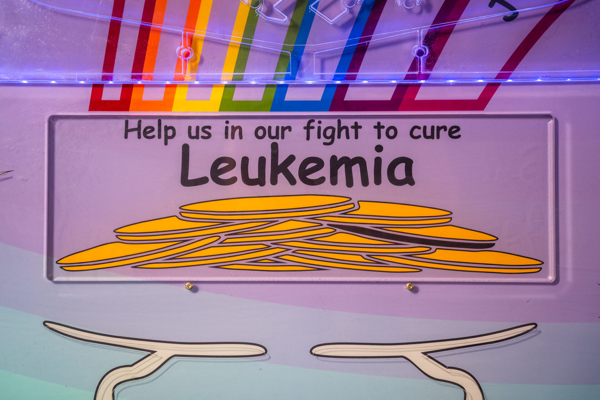

Wall-mounted
Wall-Mounted Units
Space-efficient units for foyers, waiting areas and exhibit halls, with digital counters available to show running totals.
- Fits tight circulation space
- Digital running-total counters available
- Ideal for lobbies, waiting rooms, exhibit halls